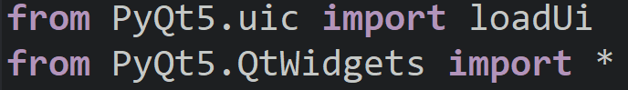

QT Designerest un programme utilisé pour créer une interface utilisateur (semblable à un site web), qui est reliée à un programme Python.
En gros, l’utilisateur peut interagir avec le code en cliquant sur des boutons , la saise des données, etc.
structure
La structure habituelle d’un code créé avec QT Designer est différente d’un code Python classique.
Chaque code QT Designer doit commencer par ces deux lignes

Ensuite, vous codez vos fonctions comme d’habitude, sauf que les données ne seront pas récupérées avec :
Variable_Name = int(input("Donner ..."))
À la place, cela ressemblera plutôt à ceci :
Container_Text = win.Line_Edit_Name.text()
Variable_Name = int(Container_Text)
Et bien sûr, si vous avez des conditions, vous pouvez les coder normalement.
Connexion des fonctions :
Pour connecter une fonction au clic sur un bouton, il suffit d’écrire cette ligne :
win.Nom_Bouton.clicked.connect ( Nom_Fonction )
exemple :
win.Button_Premier.clicked.connect ( EstPremier )
Bien sûr, toutes les connexions des boutons se font en bas du code dans ce bloc :